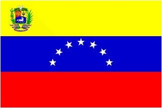
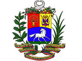
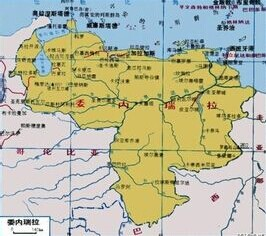

- 委内瑞拉国旗
- 委内瑞拉国徽
- 委内瑞拉志性建筑
- 委内瑞拉地理位置
委内瑞拉概况
委内瑞拉玻利瓦尔共和国是位于南美洲北部的国家
人口概况
人口:2827万, 印欧混血种人占58%, 白人占29%, 黑人占11%, 印第安人占2%。官方语言为西班牙语。出生率:20.92‰(2008年统计)
委内瑞拉经济
该国属拉丁美洲地区经济较为发达的国家之一, 是世界上重要的石油生产国和出口国。石油工业在经 济中具有极其重要的地位, 其收入占财政总收入的70%以上, 原油产量居南美洲的前列。此外还开采铁砂、金、金刚石、煤等。其他工业有石油化工、钢铁、制铝、电力、化学制品、建材、纺织、食品加工、烟草、橡胶、木材等。农业在经济中所占比重较小, 主要农产品有甘蔗、棉花、大米、高粱、咖啡、可可等。主要饲养牛、猪等牲畜。旅游业收入在经济中占重要地位, 主要旅游地区是安赫尔瀑布和玛格丽塔岛等。主要出口石油及其副产品、铁砂等, 主要进口机器、工业原料、运输设备、化工产品、食物等。主要贸易对象是美国、哥伦比亚、德国、日本、加拿大等。 公路总长约95 663千米；铁路长439千米。航空事业相当发达, 有7个国际机场。原油运输管道6 370千米。天然气管道3 690千米。石油工业是经济发展支柱。1983年原油生产约1.5亿吨, 为世界主要石油生产国和出口国之一。轻工业较发达, 七十年代以来重点发展了钢铁、石油化工、炼铝等工业。耕地面积只占可耕地面积的7.1%, 主产玉米、稻米、咖啡、可可、甘蔗、棉花等, 畜牧业以养牛为主, 农牧产品不能自给。原油及其产品占出口总值的90%以上, 其次为铁矿砂、铝材、咖啡、可可等；进口机器设备、原材料、粮食、日用品等。国内交通以公路运输为主, 主要分布于西北部和北部；空运发达。
外交关系
奉行独立自主和民族主义的外交政策。强调维护主权和领土完整, 反对外来干涉, 主张国与国之间和平共处。积极发展同拉美、加勒比地区各国的关系, 主张加快拉美一体化进程。加强同欧盟的政经关系, 增进与发展中国家联系, 实现外交多元化。1974年、6月28日, 委内瑞拉同中国建交。
经贸往来
2009年1月14日, 委内瑞拉为表抗议宣布与以色列断绝外交关系。以抗议以色列入侵巴勒斯坦加沙地带。